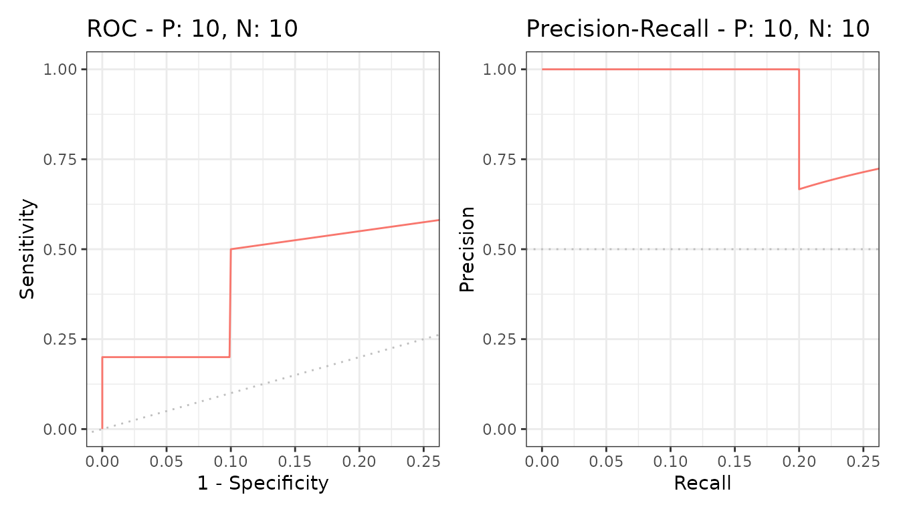
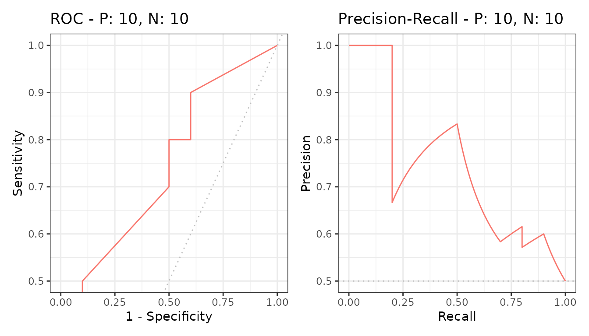

Often only part of a curve matters - the low-false-positive end when
every alert costs a review, or the high-recall end when a miss is
expensive. part() restricts a curve to that range.
Restricting the range

The full curve stays visible in outline and the selected part is highlighted, so the region is read in context rather than in isolation.
ylim restricts the other axis, and both can be given at
once.

The areas
pauc() returns the area over the restricted range.
| modnames | dsids | curvetypes | paucs | spaucs |
|---|---|---|---|---|
| m1 | 1 | ROC | 0.1006250 | 0.4025000 |
| m1 | 1 | PRC | 0.2345849 | 0.9383396 |
paucs is the raw area, which is small simply because the
range is narrow. spaucs is the standardized version,
rescaled to 0 to 1 so that ranges of different widths can be compared
with each other and against a full AUC.
Report the standardized one unless you have a reason not to. A partial AUC of 0.18 sounds poor and may be excellent for the quarter of the axis it covers.
Several models
part() works on any evalmod() object, so
the comparison carries over.
samps <- create_sim_samples(1, 100, 100, "all")
mdat <- mmdata(samps[["scores"]], samps[["labels"]],
modnames = samps[["modnames"]]
)
mpartial <- part(evalmod(mdat), xlim = c(0, 0.25))
knitr::kable(pauc(mpartial))| modnames | dsids | curvetypes | paucs | spaucs |
|---|---|---|---|---|
| random | 1 | ROC | 0.0277000 | 0.1108000 |
| random | 1 | PRC | 0.1257566 | 0.5030262 |
| poor_er | 1 | ROC | 0.1208000 | 0.4832000 |
| poor_er | 1 | PRC | 0.2091682 | 0.8366726 |
| good_er | 1 | ROC | 0.1511000 | 0.6044000 |
| good_er | 1 | PRC | 0.2500000 | 1.0000000 |
| excel | 1 | ROC | 0.2284000 | 0.9136000 |
| excel | 1 | PRC | 0.2500000 | 1.0000000 |
| perf | 1 | ROC | 0.2500000 | 1.0000000 |
| perf | 1 | PRC | 0.2500000 | 1.0000000 |